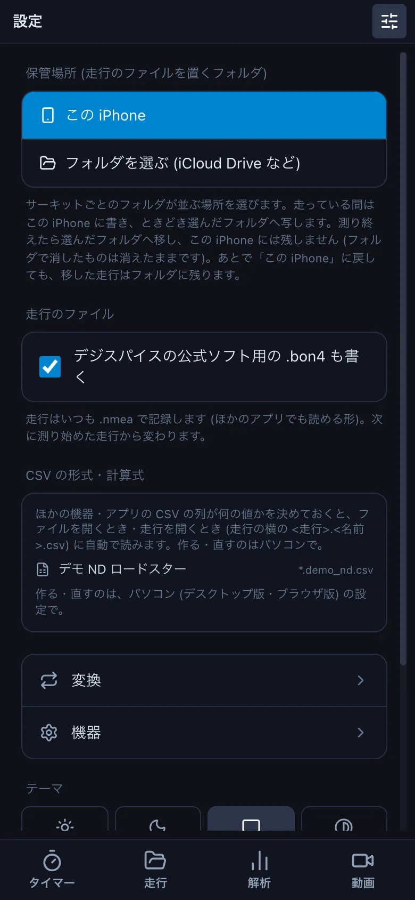
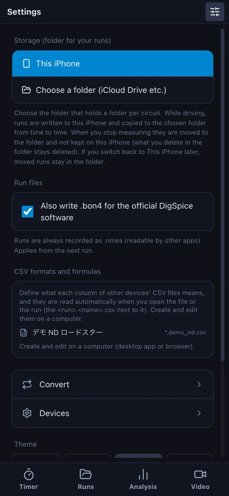
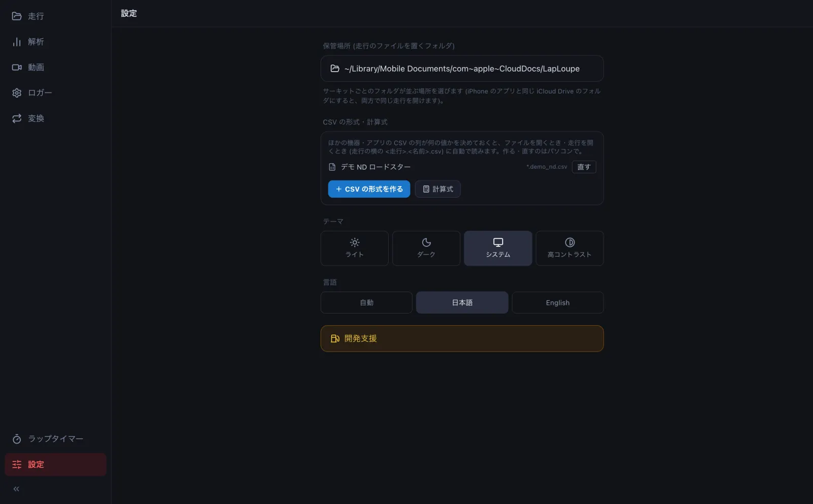
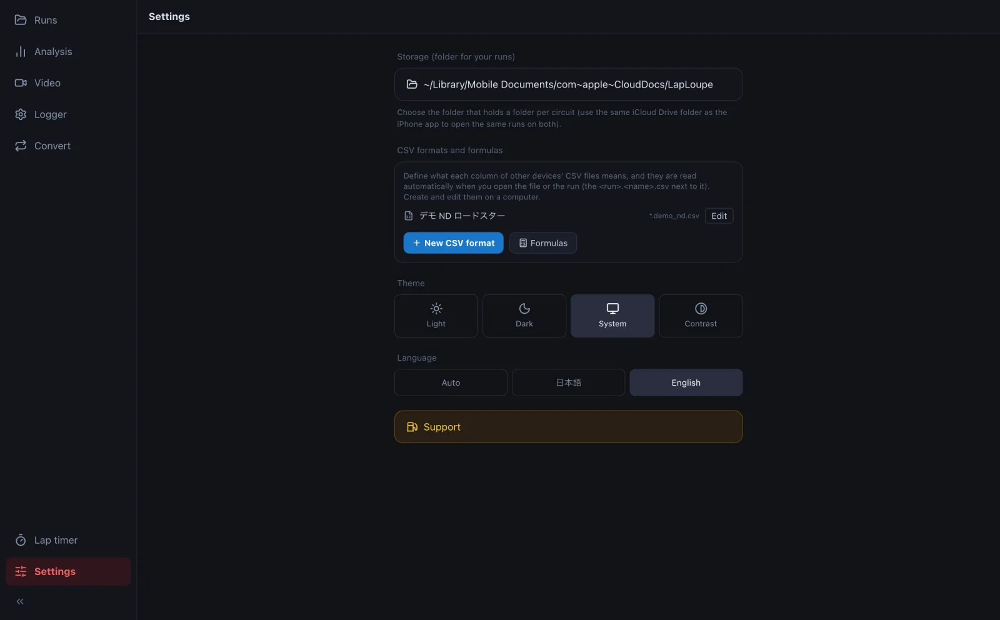

はじめに: インストールと保管場所Getting started: install and storage folder
LapLoupe は、iPhone・Android のアプリ、デスクトップ版 (Mac・Windows)、ブラウザ版で使えます。走行のファイルは「保管場所」のフォルダにまとめます。iCloud Drive の同じフォルダを選ぶと、iPhone で測った走行を PC でもそのまま開けます。LapLoupe runs as an iPhone / Android app, a desktop app (Mac / Windows) and in the browser. Your runs live in a "storage folder"; choose the same iCloud Drive folder on each device and the runs you time on the iPhone open on the PC as they are.
- App Store で「LapLoupe」を入れます (公開の準備中です。それまでは TestFlight の試験版を使います)。Install "LapLoupe" from the App Store (being prepared for release; until then, use the TestFlight test version). Android 版は、今は試験版です (配られた APK を入れます)。The Android app is a test version for now (install the APK you were given). GitHub の Releases から Mac 版・Windows 版を落として入れます。Mac 版は Apple の公証を受けた署名付きなので、そのまま開けます。Download the Mac or Windows build from GitHub Releases. The Mac build is signed and notarized by Apple, so it opens as is. https://oud0n.github.io/ds_universal/ を開くだけです (入れる物はありません)。Just open https://oud0n.github.io/ds_universal/ (nothing to install).
-
右上の設定のボタン (つまみの絵) を押し、保管場所 の フォルダを選ぶ (iCloud Drive など) で、iCloud Drive に作った LapLoupe フォルダを選びます。選ばなければ、この端末の中に置きます。Tap the settings button (sliders icon, top right), then under Storage tap Choose a folder (iCloud Drive etc.) and pick the LapLoupe folder you made in iCloud Drive. Without it, runs stay inside the app. 左下の 設定 の保管場所で、iPhone と同じ iCloud Drive の LapLoupe フォルダを選びます。In Settings (bottom left), choose the same iCloud Drive LapLoupe folder as on the iPhone.




- 保管場所の中は、サーキットごとのフォルダ (例: sodegaura) → 日付のフォルダ → 走行のファイルと動画、と並びます。ラップタイマーで測った走行は自動で入ります。GoPro の動画は、走行と同じ日付のフォルダに入れておくと、走行を開いたときに一緒に出ます。Inside, there is a folder per circuit (e.g. sodegaura), then a folder per day with the run files and videos. Runs from the lap timer go in automatically. Put GoPro videos in the same day folder as the run and they open with it.
- デジスパイスのコースデータ (digspice フォルダ) を保管場所に置いたときは、「ファイル」アプリでその digspice フォルダを長押しし、ダウンロードを保持 を選んでください。iCloud にだけあると、アプリを開くたびに 200 個ほどのファイルを取り込むので、走行や動画を開くのが遅くなります。小さなファイルなので、端末の空きはほとんど使いません。If you put DigSpice course data (the digspice folder) in the storage folder, long-press that digspice folder in the Files app and choose Keep Downloaded. While it lives only in iCloud, the app downloads about 200 files each time it opens, which slows down opening runs and videos. The files are small and take almost no space.
ブラウザ版には「走行」の画面がありません。保管場所 (走行のファイルを置くフォルダ) を使えないためです。ログのファイルは ファイルを開く で開いてください。The browser version has no Runs screen, because it cannot use a storage folder. Open log files with Open file.